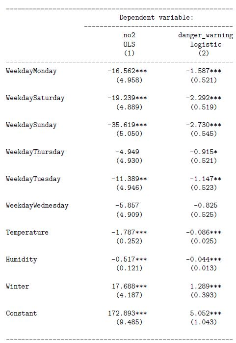

6.4 Oppgaver
6.4.1 Oppgaver om logistisk regresjon
Kommentar: Oppgave 1 a) og oppgave 2) er svært like i hva du skal gjøre, bare at den siste er mer realistisk.
Oppgave 1
Du har estimert en logistisk regresjonsmodell med to forklaringsvariabler \(x_1\) og \(x_2\). Koeffisientene i modellen er estimert til \(\hat{\beta}_0 = 0.4\), \(\hat{\beta}_1 = -0.1\) og \(\hat{\beta}_2 = 0.3\). Du observerer så et nytt individ med forklaringsvariablene \(x_1 = 1\) og \(x_2 = 2\).
- Prediker sannsynlighet for at \(Y=1\) for dette individet.
Løsning
\[z = \beta_0 + \beta_1x_1 + \beta_2x_2 = 0.4 -0.1\times1 + 0.3\times2 = 0.9\] Den predikerte sannsynligheten er gitt ved følgende sammenheng:
\[P(Y=1|Z=z) = \frac{e^z}{1+e^z} = \frac{e^{0.9}}{1 + e^{0.9}} \approx 0.71.\]- Klassifiser det nye individet.
Løsning
Siden vi estimerer \(P(Y=1)\) til å være \(0.71\) som er større enn \(0.5\) klassifiserer vi dette individet til \(\hat{y}=1\). Avhengig av kontekst, kan det være relevant å bruke enn høyere eller lavere terskel enn \(0.5\), men dette er altså standardverdien.Oppgave 2 (Individuell Eksamen V2020 1 i))
Denne eksamensoppgaven handlet om luftforurensning der myndighetene bruker en målestasjon for å advare innbyggerne dersom konsentrasjonen av nitrogendioksid (NO\(_2\)) overstiger 100 \(\mu\textrm{g}/\textrm{m}^3\). I en av deloppgavene tilpasses det en logistisk regresjonsmodell der responsvariabelen er en dummyvariabelen danger_warning, som indikerer om gjenomsnittskonsentrasjonen av NO\(_2\) den aktuelle dagen oversteg 100 \(\mu\textrm{g}/\textrm{m}^3\). Dersom det skjer må myndighetene utstede et såkalt gult farevarsel. Den estimerte modellen er gitt i kolonne (2) i tabellen under.
….. I morgen er det lørdag 16. mai, og i den aktuelle byen er det meldt en gjennomsnittlig temperatur på 19 \(^\circ\)C og en gjennomsnittlig relativ luftfuktighet på 47%.
- Bruk den logistiske regresjonsmodellen til å predikere sannsynligheten for at gjennomsnittlig NO\(\mathbf{_2}\)-konsentrasjon overstiger 100 \(\mu\textrm{g}/\textrm{m}^3\). Gi en kort vurdering om myndighetene bør utstede gult farevarsel. (Husk at luftfuktigheten er gitt på skala 0–100, og ikke 0–1).

Løsning
Den predikerte log-oddsen får vi ved å sette inn for variablene (lørdag, temperatur, fuktighet, vinterdummyen er null):
\[z = 5.052 + -2.292 - 0.086*19 - 0.044*47 = -0.942.\] Den predikerte sannsynligheten er gitt ved følgende sammenheng:
\[P(Y=1|Z=z) = \frac{e^z}{1+e^z} = \frac{e^{-0.942}}{1 + e^{-0.942}} \approx 0.28.\]
Den predikerte sannsynligheten er klart under 50%, som passer godt med den tidlighere analysen vår. Det er snakk om en forholdsvis varm lørdag i sommerhalvåret, og vi vil nok ikke utstede farevarsel.
Det kan også være gode argumenter for at vi ikke nødvendigvis bruker 50% som terskel for farevarsel. Kanskje er det mer alvorlig å ikke utstede et farevarsel som burde vært sendt ut fordi det kan være farlig for folk, enn å utstede et unødvendig farevarsel. Føre var osv., og det kan tilsi at vi f.eks. bruker 40% eller 30% sannsynlighet som grense. Det kommer litt an på situasjonen, som vi ikke har full oversikt over her.
6.4.2 Oppgaver om KNN
Oppgave 1 (Individuell hjemmeeksamen H2020, oppgave 3)
Vi har følgende datasett med seks observasjoner bestående av en binær responsvariabel \(y\) og to forklaringsvariabler \(x_1\) og \(x_2\):
| y | x1 | x2 |
|---|---|---|
| 0 | 3 | 4 |
| 0 | 4 | 5 |
| 1 | 5 | 3 |
| 0 | 3 | 6 |
| 1 | 4 | 3 |
| 1 | 6 | 2 |
Du observerer så forklaringsvariablene \((x_1, x_2) = (3, 3)\) for et nytt individ.
- Regn ut hva klassifiseringen av \(y\) blir for det nye individet ved å bruke k-nearest neighbor (KNN), med \(k=3\).
Løsning
Vi begynner med å regne ut den euklidske avstanden mellom \((3,3)\) og alle punktene \((x_1, x_2)\) i datasettet vårt. F.eks er avstanden mellom \((3,3)\) og \((3,4)\)
\[\begin{equation*} d((3,3), (3,4)) = \sqrt{(3 - 3)^2 + (3 - 4)^2} = 1 \end{equation*}\]
Vi kan så legge disse avstandene inn i en egen kolonne i tabellen:
| y | x1 | x2 | avstand |
|---|---|---|---|
| 0 | 3 | 4 | 1.000 |
| 0 | 4 | 5 | 2.236 |
| 1 | 5 | 3 | 2.000 |
| 0 | 3 | 6 | 3.000 |
| 1 | 4 | 3 | 1.000 |
| 1 | 6 | 2 | 3.162 |
Vi ser da at observasjon \(1\),\(3\) og \(5\) med avstander på h.h.v. \(1\), \(2\) og \(1\) er de tre nærmeste naboene, og blant dem er det 2 mot 1 i flertall for å klassifisere \(y\) som en 1’er. Altså er \(\hat{y}=1\).
Det går selvsagt an å løse oppgaven visuelt også.
- Hvordan fungerer KNN når \(k = n\), hvor \(n\) er antall observajoner i datasettet? Hva vil skje dersom \(k = 6\) for dette datasettet?
Løsning
Siden vi bare har seks observasjoner vil alle verdier av \(k\geq 6\) fullstendig ignorere informasjonen som ligger i forklaringsvariablene. Klassifiseringen vil da bare være basert på om det totalt sett er mest 1’ere eller 0’ere. I dette spesifikke datasettet har vi totalt tre 1’ere og tre 0’ere, så enhver majortetsavstemning med \(k\geq 6\) blir uavgjort. Altså vil det her ikke være mulig å oppnå flertall for verken 0’er eller 1’er for store verdier av \(k\).
6.4.3 Oppgaver om paneldata
Oppgave 1
For et paneldata bestående av en responsvariabel \(Y\) og en forklaringsvariabel \(X\) har du estimert modellen
\[y_{it} = \beta_1 x_{it} + v_t + \alpha_i + \epsilon_{it} \] der du har betraktet \(\alpha_i\) som faste effekter og \(v_t\) som kategoriske variabler. Estimatet av \(\beta_1\) er \(\hat{\beta}_1 = 1.5\).
- For individ \(4\) i datasettet har du estimert \(\alpha_4\) til å være \(0.2\). Videre er årseffekten for 2012, \(v_{2012}\), estimert til å være \(-0.5\). Prediker responsvariabelen til dette individet for 2012 dersom \(x_{4,2012} = 2\).
Løsning
\[\hat{y}_{4,2012}=\hat{\beta}_1 x_{4,2012} + \hat{v}_{2012} + \hat{\alpha}_4 = 1.5\times2 -0.5 + 0.2 = 2.7\]- Du tilpasser også en tilsvarende modell med tilfeldige effekter. En Hausman test gir en p-verdi på \(0.23\). Hvilken modell skal du da bruke?
Løsning
Forenklet sett har denne testen som nullhypotese at modellen med tilfeldige effekter er gyldig. Her er p-verdien veldig stor og vi har lite bevis for at denne nullhypotesen er feil. Vi kan altså bruke modellen med tilfeldige effekter.
Dersom vi hadde fått forkastning ville det vært lurt å bruke modellen med faste effekter.
Oppgave 2
Prøv deg på Oppgave 2 i den individuelle hjemmeeksamen H2020 som du finner i kapittel 8.1. Det er spesielt oppgave e) og f) som er relatert til paneldata, men vi bemerker at oppgave f) var “nøtten” i det oppgavesettet.